Scale agentic AI from on-device to cloud orchestration
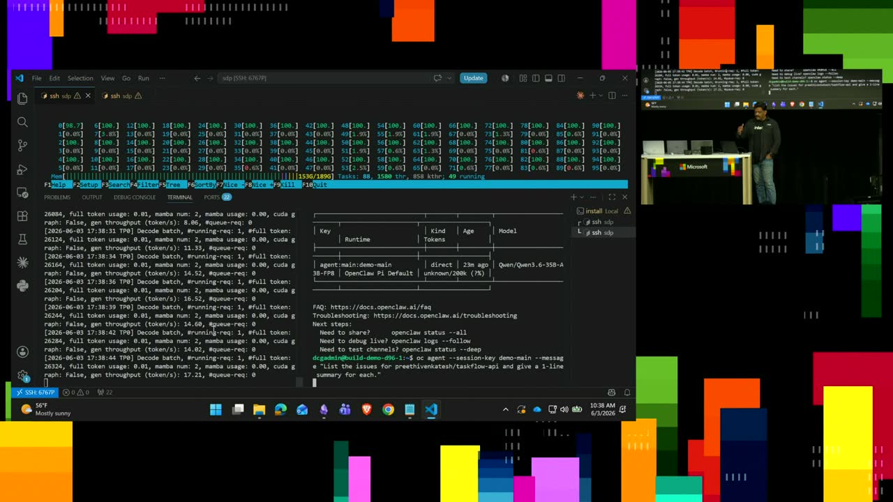
Official description
Modern AI systems span client, edge, and cloud rather than a single model. Explore how agentic AI workloads operate across these environments through three demos: real‑time on‑device agents, distributed inference across edge systems, and enterprise‑scale multi‑agent orchestration on Azure Kubernetes Service with Intel Xeon. Leave with practical guidance on placing inference, reasoning, and orchestration where they make the most sense to balance responsiveness, scale, and efficiency. Seating for this session is first-come, first-served. Add it to your schedule to plan your day and arrive early to secure a spot.
Summary
Overview
An Intel-hosted session demonstrating that agentic AI now spans client, edge, and cloud rather than living in a single hosted model. Through three live demos, the presenters show on-device inference on an Intel NPU, a pooled cluster of mini PCs serving large models offline, and a CPU-based multi-agent orchestration running on an Azure VM with Xeon processors.
Key announcements
- On-device model running on Intel Panther Lake NPU (00:02:16
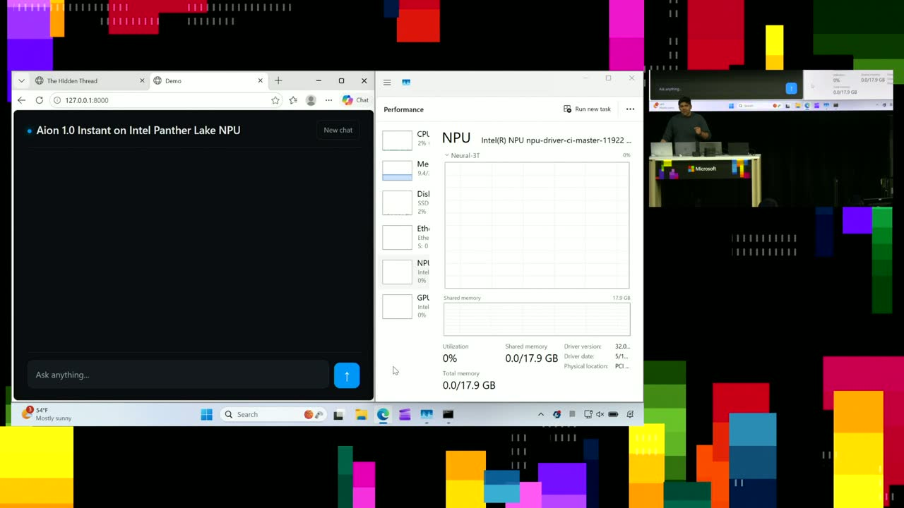
m05s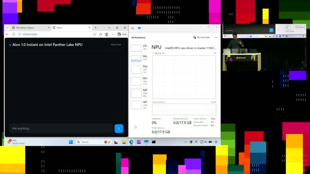
m10s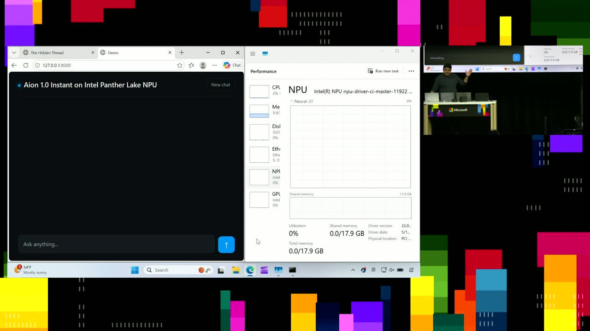
p05s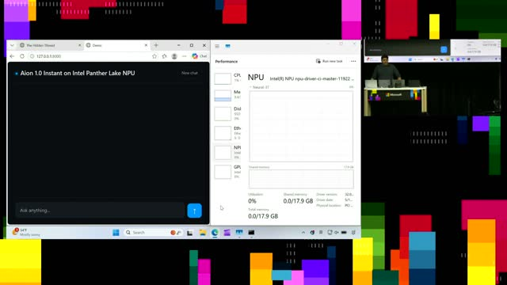
p10s) — A newly released "Ion 1.0 Instant" [inferred] small model, referenced by Satya Nadella in the keynote, runs entirely on the Core Ultra Series 3 NPU (rated ~50 TOPS) using under 20% of throughput. - Resource pooling across three Asus NUC Pro systems — Colin Helms networked three Intel Core Ultra Series 3 (X7) mini PCs over point-to-point Thunderbolt 4 (20 Gbit) links using llama.cpp RPC to pool roughly 150 GB of VRAM and run models up to ~180 billion parameters.
- Shared GPU memory override in the Intel graphics driver — A driver slider allows allocating up to 93% of system RAM as VRAM, yielding 51.3 GB of VRAM on a single 64 GB machine with Arc B390 graphics.
- Microsoft agent execution containers (announced 00:13:17
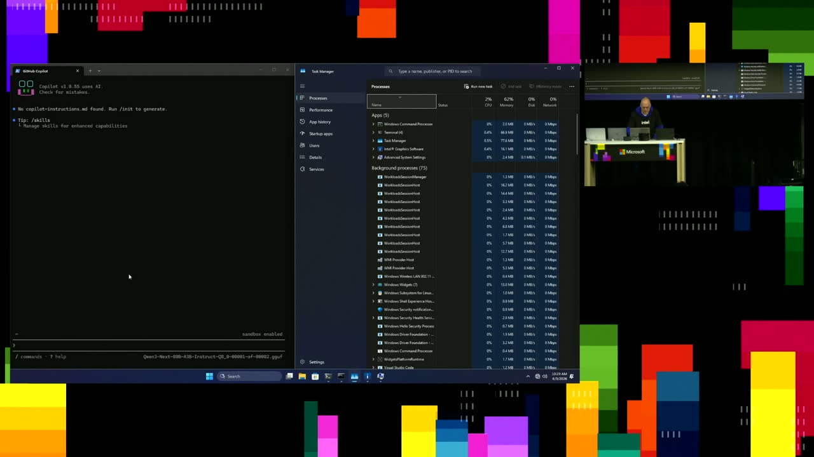
m05s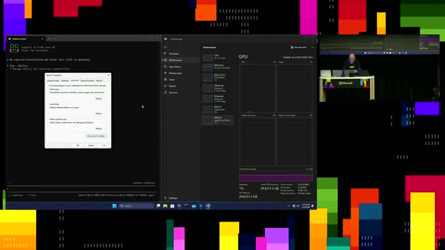
m10s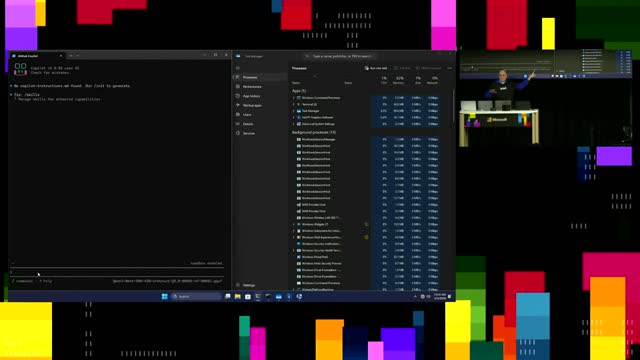
p05s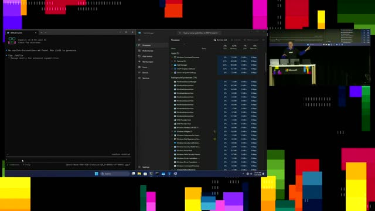
p10s) — "MXC" [inferred] sandboxing for Copilot CLI agents, configurable via policy to restrict file-system, network, and MCP server access. - CPU-based agentic orchestration on Azure (00:18:08
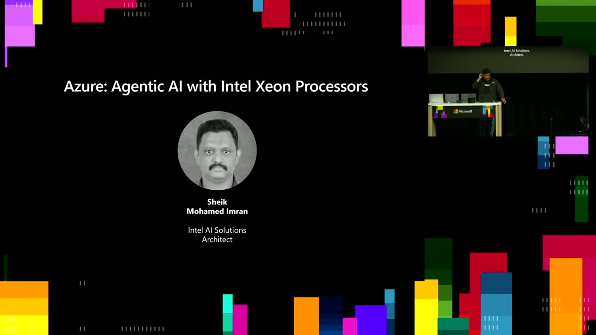
m05s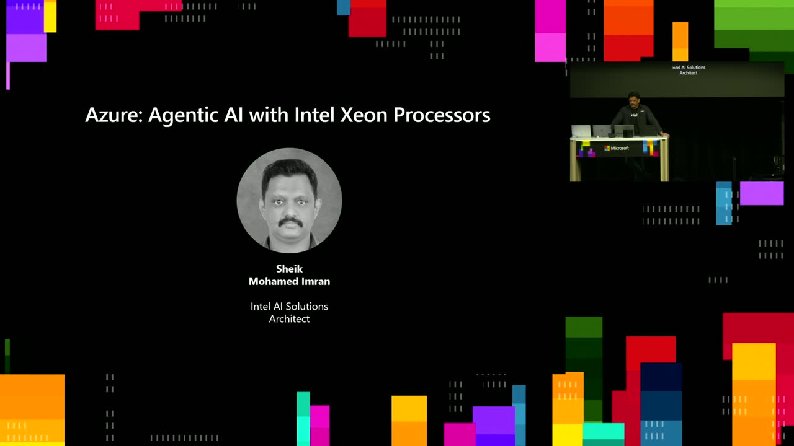
m10s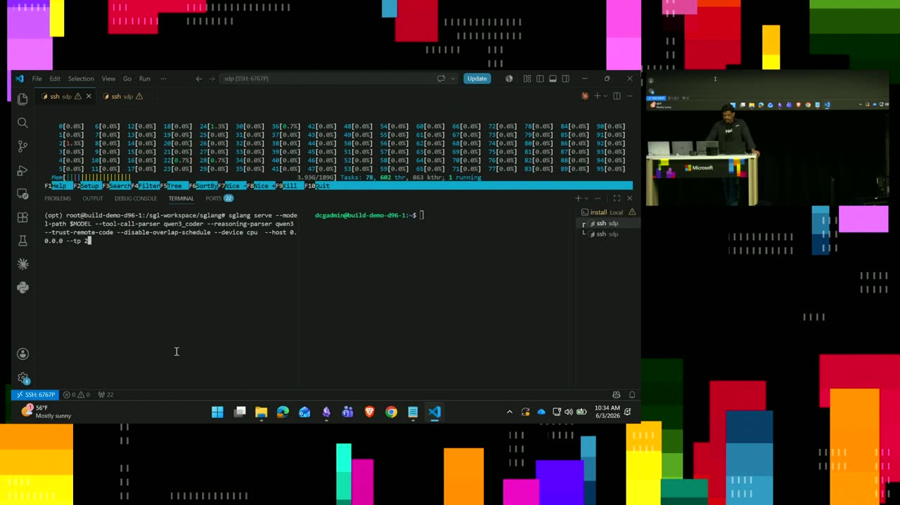
p05s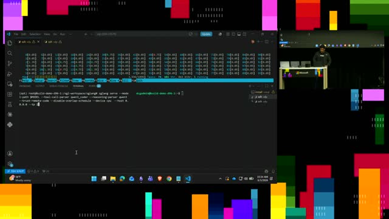
p10s) — A 96-vCPU, ~200 GB RAM Azure VM on Xeon 6 (with built-in AMX) serves a Qwen3 mixture-of-experts model to an auto-scaling, Kubernetes-hosted coding harness.
{kind=link}
{kind=link}
{kind=link}
{kind=link}
{kind=link}
{kind=link}
{kind=link}
{kind=link}
{kind=link}
{kind=link}
{kind=link}
{kind=link}
Topics covered
- Cost and latency of cloud token generation versus free local inference
- Aggressive quantization on NPUs to get smaller and faster models simultaneously
- OS-level AI APIs (Windows ML over OpenVINO) removing the need to write NPU code
- Sharding a single model across networked machines via llama.cpp RPC and Vulkan backend
- Pointing Copilot CLI in Visual Studio at local model endpoints through environment variables
- Sandboxing agents with execution containers governed by enterprise policy
- Mixture-of-experts models activating only a fraction of parameters, suiting Xeon AMX matrix multiplication
- Prefill time and time-to-first-token on CPU inference
- Throughput tuning via torch.compile and speculative decoding (draft models) in SGLang and vLLM
- Auto-scaling agent replicas for multi-persona, end-to-end coding workflows against private GitHub repos
Notable quotes
"This would run in a hospital on an airplane anywhere where the data does not get to get out of the network and it runs for free for the 10 thousandth time." — Jayneel Vora
"It's almost cheap enough to put one on every developer's desk and let them work with the larger models before they move on to more enterprise capable solutions." — Colin Helms
"One of the biggest complaints we hear from a lot of people is my company gives me 5000 tokens a month and I use those in an hour. This is your answer." — Colin Helms
Products and tools mentioned
- Intel Panther Lake / Intel Core Ultra Series 3 (X7)
- Intel NPU
- Intel Arc B390 graphics
- Intel Xeon 6 with Intel AMX
- Asus NUC Pro
- "Ion 1.0 Instant" on-device model [inferred]
- Windows ML
- OpenVINO
- llama.cpp (RPC, Vulkan backend)
- Copilot CLI / Visual Studio
- Microsoft agent execution containers ("MXC") [inferred]
- MCP servers
- SGLang
- vLLM
- Qwen3 (235B-class MoE and Qwen3 Next 80B A3B) [inferred]
- OpenClaw coding harness [inferred]
- Azure Virtual Machines / Azure Kubernetes Service
- Thunderbolt 4 / USB-4
- LPDDR5X memory
- GitHub CLI
Speakers featured
- Eddie — Engineer at Intel, session host
- Jayneel Vora — presenter, on-device AI client demo
- Colin Helms — presenter, edge resource-pooling demo
- Imran Sheik Mohamed — presenter, data center and cloud demo
Follow-up resources
- intel.com — source for the free Intel graphics driver with the shared GPU memory override
Frames
{kind=link}
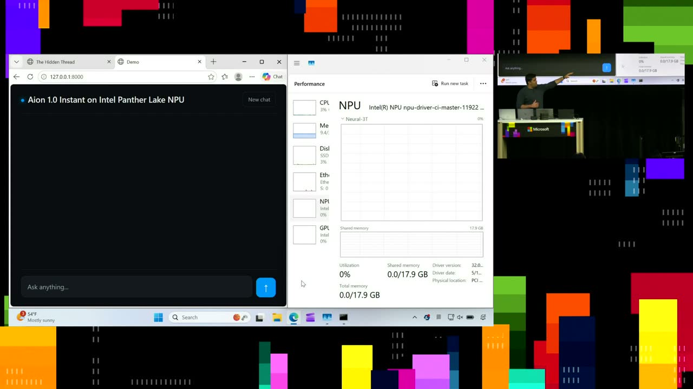
{kind=link}
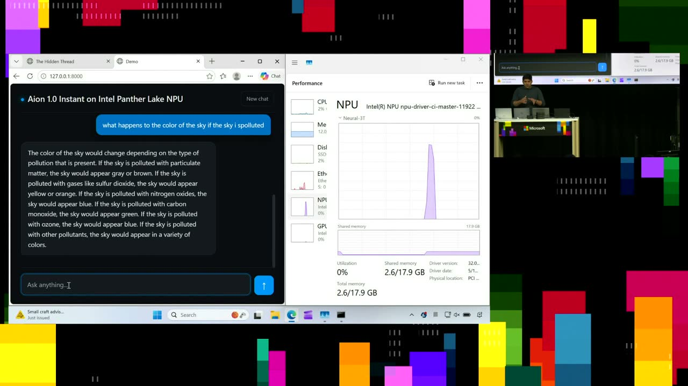
{kind=link}
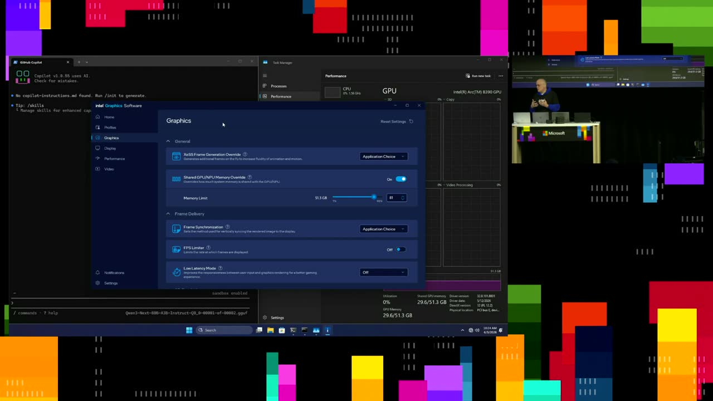
{kind=link}
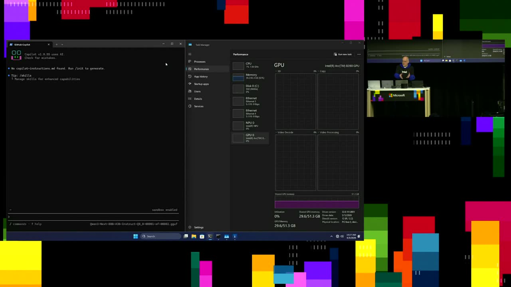
{kind=link}
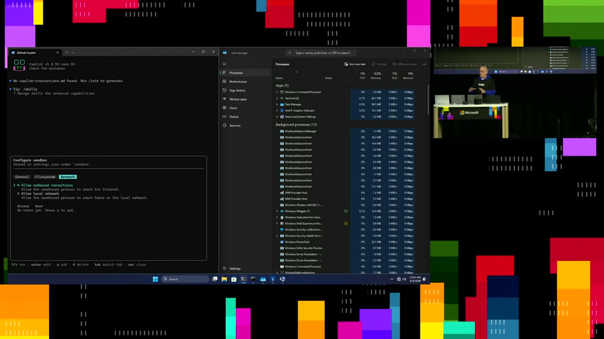
{kind=link}
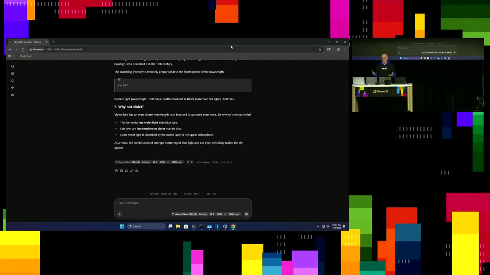
{kind=link}
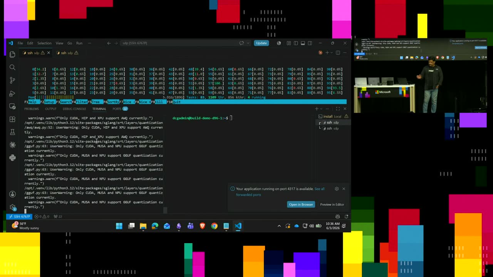
{kind=link}
{kind=link}
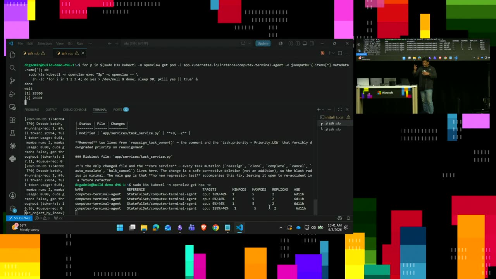
{kind=link}
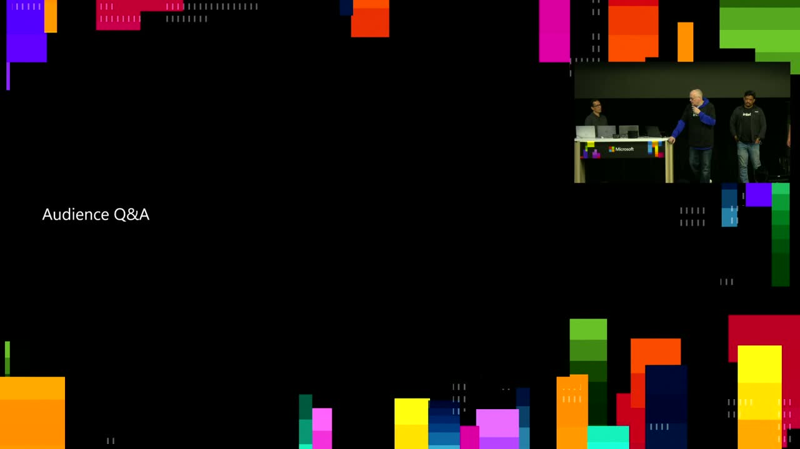

{kind=link}
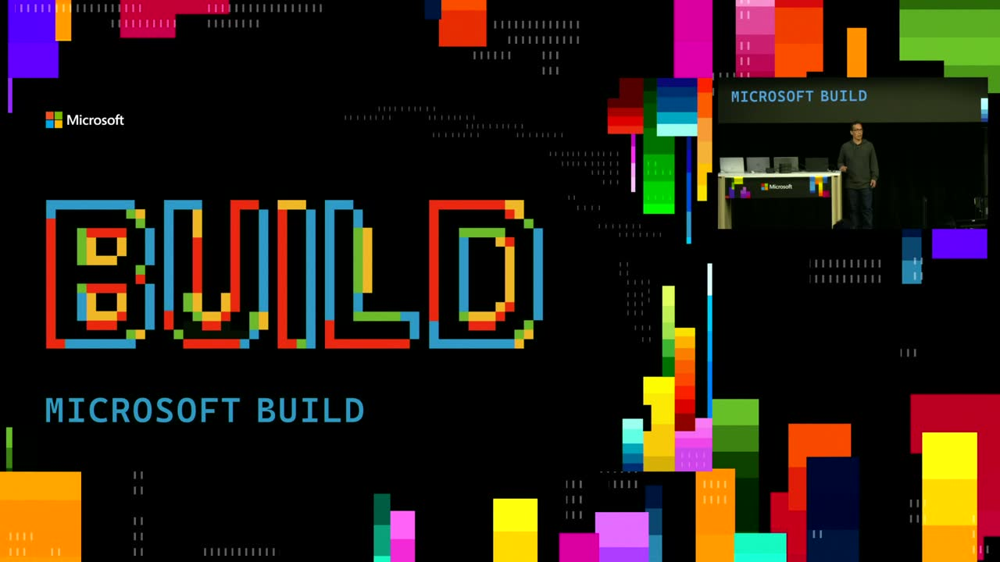


References
Transcript
Show / hide transcript (32,979 chars)
[00:00:01] Are we good? [00:00:01] Can you hear me? [00:00:02] Am I coming through? [00:00:04] All right, Cool. [00:00:06] Welcome, everyone. [00:00:07] Thank you for joining. [00:00:08] My name is Eddie. [00:00:09] I'm an engineer at Intel, and I'll be your host. [00:00:13] We're very excited to be here supporting all of you, [00:00:15] the developers, engineers, architects who are building pretty awesome things. [00:00:21] So AI applications no longer just a single model running [00:00:25] in a single place anymore. [00:00:28] Today developers are building a gentic systems that orchid that [00:00:34] basically, you know, distribute across, you know, cloud, edge and [00:00:40] client. [00:00:42] So in this session today, what we want to do [00:00:45] is we want to walk you through what this looks [00:00:47] like using three different demos. [00:00:50] First, we'll start on the client side. [00:00:52] So think lightweight agents running locally for fast real time [00:00:56] interaction. [00:00:57] Next, we'll move to the edge and we're talking distributed [00:01:01] systems. [00:01:01] So multiple systems coming together to handle more context, more [00:01:05] complex city at the edge. [00:01:06] And then finally, we'll move to the cloud, talking about [00:01:10] multiple agent orchestration happen at enterprise scale on Azure. [00:01:15] So First off, I'd like to introduce our first presenter, [00:01:19] J Neal, who's going to talk us through the AI [00:01:22] client demo. [00:01:23] J Neal. [00:01:25] Thank you. [00:01:25] Hello. [00:01:26] Right on. [00:01:30] All right. [00:01:30] We have that here. [00:01:32] Awesome. [00:01:33] Quick show of hands. [00:01:34] How many of us have maxed out our monthly AI [00:01:37] budget? [00:01:40] Awesome. [00:01:41] I have to, and I've got the side eye from [00:01:42] my management as well. [00:01:44] So today I want to show you something that might [00:01:49] tell us that that ceiling does not need to exist. [00:01:57] A lot of times when we are generating tokens, every [00:02:01] token has a round trip, it has latency, it is [00:02:04] a cost item associated with it and we cannot build [00:02:08] and deliver a lot of features because the match just [00:02:12] doesn't match. [00:02:13] It doesn't make sense. [00:02:16] So today I want to showcase Iron One Point O [00:02:19] Instant that was released just yesterday. [00:02:22] Satya talked about it at the keynote as well on [00:02:25] Intel Panther Lake, NPU, the Core Ultra Series 3. [00:02:28] All of this runs on the on device itself. [00:02:32] So before we get started, on the left side I [00:02:35] have the chat interface, nothing special, something we can whip [00:02:39] up right now in the next 30 minutes. [00:02:41] On the right side I have the systems panel where [00:02:44] I have showed up the NPU, the neural activity, the [00:02:47] CPU, the memory and all the good stuff. [00:02:50] So I am going to start talking to it and [00:02:52] we will see everything here. [00:02:53] I would love if you pay attention to the right [00:02:55] side more than the left side because that is where [00:02:58] the real story is. [00:03:04] I am just prompting right now, what is the colour [00:03:11] of the sky? [00:03:13] The colour of the sky is blue. [00:03:14] If you see right here on the resistance panel, you [00:03:16] might see NPU activity happening, a very small blip. [00:03:20] This NPU is the Intel Panther Lake, which is 50 [00:03:23] tops of AI throughput and it runs. [00:03:26] It's not even taking 20% of that. [00:03:28] Now let's give it a bigger prompt. [00:03:31] Why is the color of the sky blue? [00:03:39] Look at how fast that was. [00:03:40] This is on your device and there's NPU throughput right [00:03:45] there. [00:03:48] Look at the memory. [00:03:48] It did not increase by a lot. [00:03:50] So when you think of it, your features, you sorry, [00:03:53] your app has features. [00:03:55] Your users have a lot of things going on on [00:03:57] their systems. [00:03:58] This just coexists. [00:04:00] If you look at the CPU as well, there was [00:04:02] a small blip there, nothing going on there. [00:04:04] So there is no, you know, thermal throttles, no power [00:04:08] falling off the Cliff, no fans as well. [00:04:11] So that's the best part. [00:04:12] The best thing that I feel as an engineer on [00:04:15] the Indole Panther Lake that just came out in January [00:04:19] is it allows for very aggressive quantization strategy so you [00:04:22] can really compact your models and which allows us not [00:04:26] to like have to choose between getting a model that [00:04:29] is faster or smaller. [00:04:31] You get both. [00:04:32] You get a faster and sorry, faster and a smarter [00:04:34] model and you get both. [00:04:39] This would run in a hospital on an airplane anywhere [00:04:42] where the data does not get to get out of [00:04:44] the network and it runs for free for the 10 [00:04:47] thousandth time. [00:04:48] Something I also want to point out is there is [00:04:53] sorry, which thing I want to show you. [00:04:57] Oh, I want to do one more prompt. [00:04:59] What happens if the air if the sky is polluted [00:05:03] or let's say what happens to the color of the [00:05:07] sky? [00:05:13] And I made a spelling error there, but it's still [00:05:16] pretty good. [00:05:18] So we see that right here as well, right? [00:05:21] All right, again, the best thing about this again is [00:05:25] I did not write any NPU code for this. [00:05:29] This is all using OS level APIs. [00:05:32] I got the AI model, I worked with it on [00:05:35] the NPU. [00:05:36] I just put it on the NPU and ran with [00:05:38] it. [00:05:38] It used OS level APIs, Open Vino at the bottom, [00:05:42] Win ML on top, and that's all. [00:05:45] Scheduling. [00:05:46] It is the platforms job, not ours. [00:05:48] We build features and that's all we do, right? [00:05:52] It just takes care of it. [00:05:53] Microsoft gives you the model and API Surface, and Intel [00:05:56] makes sure that when you have the app, it runs [00:06:00] on device on premise and it's always available when you [00:06:03] know you're not connected to the network. [00:06:06] And the code always runs clean, fast and cool and [00:06:10] on hardware that users already own. [00:06:14] So that's the Ion 1.0 instant on Intel Panthelic and [00:06:19] View. [00:06:20] And I want to show you a quick thing. [00:06:21] It's a quick call out. [00:06:22] We have a really cool demo right here. [00:06:27] It's reasoning on Intel NPU at the booth. [00:06:29] It's a game that I like to play, you put [00:06:31] into words and you can give get a relation between [00:06:34] the two. [00:06:34] So it's really good at reasoning. [00:06:36] It's a reason. [00:06:36] It reasons pretty well on the NPU that we have. [00:06:39] So look forward to seeing you at the booth. [00:06:41] Thank you all. [00:06:47] Right. [00:06:48] Thanks, J Neil. [00:06:49] OK, Next up, I'd like to bring up Colin to [00:06:52] the stage. [00:06:52] He's going to showcase this pooling of resources on these [00:06:55] stacks. [00:06:56] Excellent. [00:06:56] Thank you all right, thanks for joining us today. [00:07:00] What I'm actually showing you so as we said, Edge [00:07:03] use case, this is client and it's AI on client. [00:07:05] So what I brought for you guys today is I've [00:07:08] got three of the new Asus Nook pros. [00:07:10] This is the Nook Pro 6 team and they're running [00:07:14] our latest Intel Core ultra series 3 processors. [00:07:17] Specifically these are running X sevens. [00:07:21] So when you're shopping for this Core Ultra series three, [00:07:25] that X means that it has our big built in [00:07:28] graphics. [00:07:29] So benefiting from that obviously is gaming, because on one [00:07:33] of these, I mean there's a land party stack if [00:07:35] you were gaming on it, But the way I'm using [00:07:38] it is for AI and what I what I went [00:07:40] brought to show you guys today is kind of what [00:07:43] we what you know, how flexible the platform is when [00:07:46] it comes to AI. [00:07:48] So each one of these as I said has our [00:07:50] big Arc B 390 graphics built into the into the [00:07:54] chip and they have 64 gig of RAM. [00:07:57] What you can do today though built into our graphics [00:08:01] driver. [00:08:01] So this is the the free driver for our graphics [00:08:04] that you can download from from intel.com is you'll see [00:08:08] the second thing down there that says shared GPU MPU [00:08:12] override. [00:08:13] So with the big graphics, we are enforcing our OEMs [00:08:16] to put really, really fast LP DDR5X memory in there. [00:08:21] So 9200 or faster is what we're what we what [00:08:23] we're really shooting for. [00:08:25] So it's really fast memory that's in there. [00:08:27] And So what we've enabled for AI is this little [00:08:30] slider that you see and right now it's set to [00:08:33] 81. [00:08:34] I've got 64 gig of RAM on one of these. [00:08:37] But by adjusting this, I can set up to 93% [00:08:42] of that RAM as video RAM. [00:08:47] So if I change this, I do have to reboot. [00:08:50] But as you if you can, as you see here [00:08:53] in task manager, I have 51.3 gig of VRAM, which [00:08:57] means I can take a single one of these systems [00:09:02] and I can work with the latest Win 3628V models [00:09:06] really, really well. [00:09:09] I've taken another step further here because having these three [00:09:14] systems together and the performance of the graphics and the [00:09:18] processor that we have, I've used Llama CPP and the [00:09:22] RPC functionality that is in Llama CPP and I've connected [00:09:27] the three via IP and I'm by doing that I [00:09:30] pool the resources together. [00:09:33] So all this sudden, this little stack of nooks has [00:09:37] 150 gig of VRAM that you can load a really [00:09:41] large model into. [00:09:43] So what I've here, what I have here to show [00:09:46] you guys today is just you know, to show you [00:09:49] I've got copilot CLII could have a model. [00:09:52] I'm sorry, an agent running on here, but I if [00:09:54] you come by our booth, you can see I've got [00:09:56] an agent running on a stack there. [00:09:58] What I did for you guys in here though, is [00:10:00] I want to show it completely offline. [00:10:03] So the network I have on these is actually, and [00:10:06] you're welcome, welcome to show you, but I have a [00:10:09] little point to point Thunderbolt cables. [00:10:12] So I'm using Thunderbolt 4 to network the three together [00:10:16] and those are 20 Gigabit links between each system. [00:10:21] And then using Llama, I'm able to load really up [00:10:25] to about 180 billion parameter model on these things. [00:10:30] What I'm showing you guys today, and you can kind [00:10:33] of see it down here, my head's not in the [00:10:36] way is I've got the Q in next ADBA 3B [00:10:39] model on there and that is running at about 16 [00:10:42] to 18 tokens per second off of the these little [00:10:45] systems. [00:10:46] So just to to build on what Jay Lane was [00:10:49] saying, this gives us free tokens. [00:10:52] This is a really smart local model and the total [00:10:56] cost of that stack is less than $7000. [00:11:01] So when you compare this to some of the other [00:11:03] solutions out there, you might get a more speed, but [00:11:06] this is really, really flexible. [00:11:08] Even a single system is is really potent. [00:11:12] So if you were to buy a set of these, [00:11:15] you know it it's, it's, it's almost cheap enough to [00:11:18] put one on every developer's desk and let them work [00:11:21] with the larger models before they move on to more [00:11:24] enterprise, you know, capable solutions. [00:11:27] But even if you had say, a team of 10 [00:11:30] people, you could, you know, load a 2835 billion parameter [00:11:34] model on each one and then load balance them and [00:11:37] support a whole team of people. [00:11:40] So it's really, really flexible. [00:11:43] It's low cost. [00:11:44] And on top of it, these guys draw maybe 100 [00:11:47] watts apiece. [00:11:49] So we're very low power. [00:11:51] It stays cool. [00:11:53] What I'm showing you here, there's no network backbone stuff [00:11:57] to pay for. [00:11:58] It's just Thunderbolt cables, USB-4 cables really, and it what [00:12:02] it allows you to do. [00:12:04] As you see here, I've got Copilot, the Copilot CLI, [00:12:07] which is the the agent that's built into Visual Studio. [00:12:10] A lot of people aren't aware, but as you see [00:12:13] here, you can point it to local models. [00:12:17] To do that, all you have to do is set [00:12:21] a few environment variables, but you can see here. [00:12:27] So here I set the model, I tell it the [00:12:29] endpoint IP address that I'm using, give it the API [00:12:33] key, and then from then on out in Visual Studio, [00:12:36] I'm using an 80 billion parameter model to check my [00:12:39] code and to work with. [00:12:43] And again, free tokens. [00:12:45] So one of the biggest complaints we hear from a [00:12:47] lot of people is my company gives me 5000 tokens [00:12:50] a month and I use those in an hour. [00:12:55] This is your answer. [00:12:56] This is a much more cost effective way of deploying [00:12:59] a large model for a small team to use it. [00:13:02] And you know, just to kind of show you what [00:13:04] I also have going on here, because I do have [00:13:07] the copilot CLI up is I'm going to show you [00:13:09] guys a quick process. [00:13:11] And one of the things I enabled but you see [00:13:14] in the copilot CLI was announced yesterday. [00:13:17] So if you didn't get to get a chance to [00:13:20] hear about the new MXC, Microsoft MXC, which is their [00:13:24] execution containers for agents, you can start experiment with experimenting [00:13:30] with those today. [00:13:32] And to do that, you can set up copilot CLI. [00:13:35] It could use a local model, it could use a [00:13:37] cloud model. [00:13:37] But what you're trying to do is you're really encapsulating [00:13:40] the code and not letting it run off and and [00:13:42] you know, do things you don't want it to. [00:13:45] So just to show you some of the configuration, you [00:13:49] can configure it to allow access to MCP servers. [00:13:53] You can give it certain file systems you can access, [00:13:56] or you can even set the network in and out. [00:13:59] And you may start thinking there are other tools that [00:14:01] can do this. [00:14:01] But the beauty of MXC is it's part of the [00:14:04] Microsoft platform, which means these things, these settings can be [00:14:09] set through policy. [00:14:12] So your administrators are happy. [00:14:15] Developers may not be as happy, but it will keep [00:14:17] them reined in and make sure everything is nice and [00:14:19] safe as they're running it. [00:14:21] And to just show a quick sample because I am [00:14:24] sandboxed here, I'm going to go ahead and ask this [00:14:27] thing to run a script. [00:14:29] And I got an easy script that I like to [00:14:31] show if I can spell right. [00:14:32] You know, spelling doesn't matter with AI. [00:14:34] So but I'm going to say run a script that [00:14:39] pauses 5 seconds. [00:14:42] I'm a fast typer and I want you guys to [00:14:45] keep an eye out over here under the background processes [00:14:49] because when this runs and you'll see, first of all, [00:14:52] it's working with a model. [00:14:54] It's talking to the model right now. [00:14:56] What? [00:14:57] What's the script? [00:14:57] How do I build a script? [00:14:58] Let me build this script. [00:14:59] I need to use PowerShell to run the script and [00:15:03] it's a little slower than I'm used to. [00:15:07] This morning. [00:15:07] This is demo demons coming at me. [00:15:09] But because it's containerized, you'll actually see a little execution [00:15:14] container pop up on the left side over there. [00:15:17] That's an executable and it'll pop up and disappear really [00:15:20] quick if the script finishes. [00:15:24] Look at my time demos, demos, all right, Well, just [00:15:29] to make sure and let you guys see the the [00:15:32] the the model is running, I'm going to go ahead [00:15:36] and cancel this a second and I'll show you the [00:15:41] the web interface for the model. [00:16:01] You know, this was working 2 minutes ago, so we'll [00:16:06] go ahead and just just to show you the the [00:16:11] speed of the model, I'm going to say by is [00:16:15] the sky blue. [00:16:20] And at least here you can see the token processing [00:16:22] speeds of the model itself running across these three. [00:16:25] There's a little bit of hiccup between the CLI and [00:16:28] it it's like the first time it runs when the [00:16:30] models coming up, it takes it a little bit longer [00:16:32] because I just brought it up. [00:16:34] But once it's up and running, you get a pretty [00:16:36] good, yeah, as you can see, pretty decent token speed. [00:16:39] I'm seeing right now around 12 with this model, but [00:16:42] it it comes it boosts between 12 and about 16. [00:16:45] So again, cost effective free tokens, it's really meant to [00:16:50] be able to experiment and develop with. [00:16:53] So hopefully this is something new to you guys, something [00:16:56] you know, you've learned a little bit and it starts [00:16:59] you thinking of new ways of using small edge client [00:17:02] PCs like this, not just individually, but distributed. [00:17:05] So thank you. [00:17:12] Thank you, Colin. [00:17:13] Very compelling demo showcasing the power of this pooled resources. [00:17:18] OK, so Next up, I'd like to invite Imran to [00:17:21] the stage. [00:17:21] He's going to talk to us about our final demo [00:17:24] data center in cloud. [00:17:30] Thanks, Eddie. [00:17:31] So yeah, good morning, everyone. [00:17:33] Hope you had a good ride over to the Convention [00:17:36] Center today. [00:17:38] And on your way to the Convention Center, you would [00:17:41] have noticed a lot of billboards and a lot of [00:17:44] billboards talking about Agent AKI. [00:17:46] And Agent AI has really transformed how we interact with [00:17:51] LLMS far more beyond that what chat used to be, [00:17:55] right? [00:17:56] So with chat, you just type a bunch of queries, [00:17:59] you just type a bunch of text. [00:18:01] And what you would see is that you would see, [00:18:05] you see the LLM response to your chat questions. [00:18:09] And even right now, you see that the tools that [00:18:12] you interact with, the online tools that you interact with, [00:18:16] they kind of move and execute the 2 commands on [00:18:19] a private VM and a sandbox and whatnot and get [00:18:22] the tools out. [00:18:23] And all the thing that ties these together in common [00:18:28] is the context sizes. [00:18:29] So context sizes have gone very much beyond the traditional [00:18:33] methodologies. [00:18:34] The traditional sizes that you have seen in chat say [00:18:38] like 11000 tokens, 2000 tokens. [00:18:40] The common standard where people tend to start when it [00:18:43] comes to agentic systems is at least a minimum of [00:18:46] 10,000 tokens, right? [00:18:48] And so token sizes have gone larger and running local [00:18:52] AI with accelerators with GPUs, the memory on the GPUs [00:18:57] have become a slightly bit of a bottleneck. [00:19:00] But what if you have a better way to do [00:19:03] or reuse the private VMS that you already have in [00:19:06] your VPCS? [00:19:07] And that's what we'll be looking in this demo. [00:19:08] So we'll be hosting our own local LLM here. [00:19:12] So the LLM that will be hosting on the system [00:19:16] which has 96 cores of virtual CPUs on hosted on [00:19:20] Azure VM and it's going to be having about 200 [00:19:24] gigabytes of RAM available in it. [00:19:27] So we'll be loading when 3.635 billion parameter model with [00:19:31] three billion active parameters. [00:19:33] And one of the good shifts that we see with [00:19:36] open source that with mixture of experts model, not all [00:19:40] the parameters gets activated when the model is executed, right. [00:19:44] So only only a fraction of the OS active parameters [00:19:47] gets activated. [00:19:48] And that's kind of advantageous for running them on Zeon [00:19:53] 6 CPUs because Zeon 6 CPUs has AMX built into [00:19:56] it which speeds up matrix multiplication and more than 80 [00:20:01] percentage of the execution operations in transformer based models. [00:20:07] They are predominantly matmal and that also directly transfers into [00:20:11] how? [00:20:15] How the the prefill time like kinds of impacts the [00:20:18] TTT time taken for first token impacts your on your [00:20:21] solutions, right. [00:20:22] So now that the model is up and running on [00:20:25] the left side, you see that the model, the model [00:20:29] is serving right now. [00:20:30] And I also have another instance where you can see [00:20:34] that I have deployed open claw the harness for on [00:20:38] a Kubernetes based system, right. [00:20:41] So you just have one open class system just up [00:20:43] and running. [00:20:44] We can check the status of it by issuing OC [00:20:48] status and it is up and running and it is [00:20:51] mapped to the model that we just have it on [00:20:55] the that that we just loaded on the left. [00:20:59] And that is something that you see over here the [00:21:04] Quan 3.635 billion with the context size of 200,000, right. [00:21:10] So scenarios where you want to have where you do [00:21:14] have CPU cycles and you do want to have private [00:21:17] agent AKI. [00:21:18] This setup is something that you could traditionally use. [00:21:21] Now let us go ahead and ask open Claw to [00:21:25] interact and list a set of set of issues that's [00:21:29] listed in a private GitHub repository, right? [00:21:34] So typically what happens is that when you give this [00:21:37] command, Openclaw is going to parse this command and send [00:21:40] it to the LLM inference token to understand what tools [00:21:43] it is to call, right? [00:21:44] So we have, we have set up the GitHub command [00:21:47] line interface inside the Openclaw instance so that it can [00:21:50] absorb the information that's been passed from the LLM and [00:21:54] run the commands actually. [00:21:55] So what you see happening is 2 steps process one [00:21:58] LLM instructing what commands to execute. [00:22:01] And by the time that the steps have been executed [00:22:05] by the Openflow, it sends back the information to the [00:22:08] SG Lang LLM serving engine, which kinds of tells, kinds [00:22:12] of summarizes the output based on the input that we [00:22:15] just gave. [00:22:16] So that's something that we are going to be looking [00:22:19] at over here. [00:22:20] And what you can see is that the tokens being [00:22:23] printed is roughly around 16 to 15 to 16 tokens [00:22:27] per second. [00:22:28] You can kind of increase this throughput also by by [00:22:32] couple of ways. [00:22:33] One is torch compile. [00:22:34] When you compile it is going to be much more [00:22:36] faster. [00:22:36] You would get around 21 tokens with these 96 cores. [00:22:40] You can also do a draft model with speculative decoding [00:22:44] that is that is going to be coming up soon [00:22:47] with SG Lang. [00:22:48] We already have a draft model, speculative decoding model available [00:22:52] in other inference engines like VLLM. [00:22:54] So all the popular inference frameworks like VLM, SG Lang, [00:22:58] we supported that. [00:23:00] So what do you see here is that the output [00:23:02] from Open Claw, it has listed a bunch of issues [00:23:06] and PRS that's that's available in the in the predicate [00:23:09] that we just talked about. [00:23:11] So now let's ask Open Claw to go ahead and [00:23:16] create create a list of the riskiest file for a [00:23:20] specific issue so that it kinds of goes through the [00:23:26] issue. [00:23:27] So gets the runs the GitHub command line to extract [00:23:30] that information, passes it to open cloud the same process [00:23:34] again and kinds of gives us a summary that what [00:23:36] you want, right? [00:23:38] So the first step is completed, meaning the instructions has [00:23:42] been translated into whatever execution commands that Open Claw has [00:23:47] to execute. [00:23:48] Now it's just running the summarization or kind of generating [00:23:51] the response to it. [00:23:53] And you can see that that only, only one file [00:23:56] was changed in that specific issue that we are talking [00:23:59] about. [00:23:59] And probably because of that as the resistance case file. [00:24:03] Now the advantage of keeping the Open Claw instance just [00:24:06] in this case hardness, which can be recently replaced by [00:24:09] any other hardnesses like say π Dev or Hermes or [00:24:12] anything for that matter, is that you could also do [00:24:15] auto scaling. [00:24:16] So, so we are going to look at how auto [00:24:18] scaling is going to be happening here. [00:24:21] So for starters, we will be looking how many instances [00:24:25] of of the mini pods are running right now. [00:24:28] And this is something that you get right. [00:24:30] So right now we just have like 2 replicas running [00:24:34] at the same point in time. [00:24:36] And then we when you go and automatically increase the [00:24:39] load on the system, you'll see that as and when [00:24:43] the load gets increased as another CPU utilization gets increased, [00:24:48] the replica will automatically increase. [00:24:51] And the advantage of the having this way is that [00:24:53] you could spin up multi agents or you could also [00:24:56] kind of scale the instances into multiple set of scenarios [00:25:00] and give it to multiple persona. [00:25:02] Say something like APM, like a reviewer and whatnot, who [00:25:05] can use the same instance in the in a single [00:25:08] given box to do the end to end workflow that [00:25:10] you that you need. [00:25:12] You would also just push it in a kind of [00:25:14] a nightly job of sorts to for the agents to [00:25:17] communicate with each other and kind of complete the entire [00:25:20] coding for a specific PR or specific issue that's been [00:25:23] listed. [00:25:24] So that is something that you could do with a [00:25:27] single VM hosted on Zion and it's going to be [00:25:29] not heavy on the pocket as well. [00:25:31] So that's that's what the demo that we have for [00:25:33] today. [00:25:34] Thanks. [00:25:41] All right. [00:25:42] Thank you, Imran. [00:25:44] OK, so those are our three demos for today. [00:25:46] I think we have some time for any questions. [00:25:50] So do we have any questions for our presenters today? [00:26:11] How? [00:26:11] How expensive are these boxes? [00:26:13] Individually, they're about 2500, but that's the highest spec you [00:26:18] can possibly put in them. [00:26:20] Yeah. [00:26:21] Yeah. [00:26:22] The whole stack should be, well, really, around 2300. [00:26:25] The whole stack's about 7000. [00:26:27] Yeah. [00:26:35] When you're stacked. [00:26:35] When they're stacked up, how? [00:26:38] Does the scheduling of the model? [00:26:40] How did the workload management happen on on these type [00:26:42] of? [00:26:44] Things right right now it's using a single Llama CPP [00:26:46] endpoint. [00:26:48] So there there's there's different ways you can do this. [00:26:51] Right now I'm sharding the model into 3 differences and [00:26:54] and pushing it out when I first load the model. [00:26:57] The the biggest usage of the network is when you [00:27:00] first do that and the faster your network the faster [00:27:03] it comes together. [00:27:04] And then once it's together, I just have RPC servers [00:27:07] on each one. [00:27:08] And so Llama handles calling out where it needs it [00:27:12] from which machine on its own. [00:27:15] Yeah. [00:27:15] And so you just use Llama to set up your [00:27:17] your open AI endpoint, and then you can point all [00:27:19] the agents or anything you need to it. [00:27:22] Yeah, so. [00:27:22] Llama takes care of breaking it down. [00:27:25] The model, Yep. [00:27:28] Different layers, Yep, Yep, it's all very off the shelf. [00:27:31] What I've what I've done here is I'm actually compiling [00:27:34] and I say compile and it sounds scary, but I [00:27:37] compile llama CPP, which is like two or three lines [00:27:40] of terminal really. [00:27:41] But you have to enable there's a a dash RPC. [00:27:47] And then I'm using the Vulcan back in, in back [00:27:50] in here because I am directly using the graphics. [00:27:53] And so for this use case that works really well. [00:27:58] And so, yeah, that's that's kind of all this pretty [00:28:00] good. [00:28:00] So one last question, would we support similar capability to [00:28:03] open, we know whatever Lamar? [00:28:07] Does we do, it's coming, it's coming. [00:28:10] Open Vino is real. [00:28:11] So if I was doing individual machines, Open Vino is [00:28:14] going to beat most of what I'm doing. [00:28:17] It's because I've got it using the RPC servers. [00:28:20] Open Vino's needs a little bit of work because it [00:28:23] gets kind of gets confused about the memory. [00:28:27] But it, like I said, if it's a single machine [00:28:29] running it, it's going to be a lot faster than [00:28:31] just the Vulcan, Yeah. [00:28:38] Do we have any further questions? [00:28:42] Come by the booth if they no don't. [00:28:44] All right. [00:28:45] Well, that's our time for today. [00:28:46] Thank you, folks. [00:28:47] Any more questions swing by our booth. [00:28:49] Appreciate the attendance. [00:28:50] Enjoy the rest of the conference. [00:28:51] Thank you.